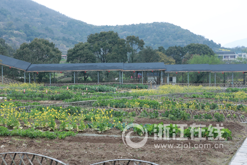
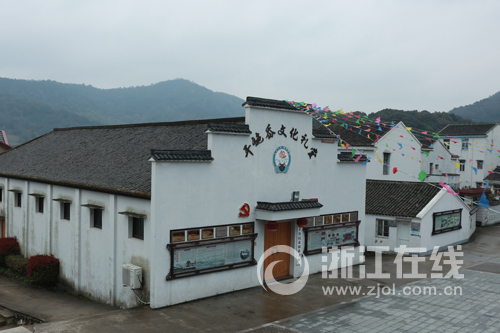

在展茅的红色记忆中，“五匠” 从未缺席革命洪流。上世纪四十年代，浙东沿海抗日根据地面临物资匮乏、防御薄弱的困境， 当地木匠史阿公、船匠王老伯等匠人自发组成 “工匠支援队”，用双手为革命事业筑起 “隐形防线”。
那时，日军对海岛实施封锁，根据地急需船只运送物资、转移伤员。船匠王老伯带领徒弟们躲在山洞里赶工，没有像样的工具就用磨尖的竹片替代， 没有桐油防腐就用自制的松脂膏涂抹船身。为避开日军巡查，他们只能夜间作业，借着月光丈量尺寸，仅凭经验校准船型。有一次， 为赶造 3 艘运输船，王老伯连续 7 天未合眼，手指被凿子划开深痕，只用稻草灰简单包扎便继续干活。他常对徒弟说：“船板要钉牢，革命的根更要扎牢，咱们手上的力气，就是打鬼子的底气！”


木匠史阿公则承担了打造隐蔽工事的任务。他利用榫卯结构的精妙，在民居梁架中设计暗格，用于存放枪支弹药；在门板、窗棂上刻下特殊纹路，为地下党传递联络信号。 有一次，日军突然搜查村庄，史阿公将两名伤员藏进自己打造的 “夹层衣柜”，面对刺刀威胁，他谎称衣柜是 “祖传旧物，一拆就散”，凭借对木料特性的精准把握骗过敌人。 事后，伤员握着他满是老茧的手说：“您的手艺救了我们，更救了革命的火种！”
这些故事如今被定格在五匠馆的蜡像场景中：山洞里的造船作坊、刻着暗号的木门、布满划痕的工具，无声诉说着匠人们 “以技报国、守土尽责” 的红色担当。 正如史久堂老人所说：“木匠讲究‘横平竖直’，做人更要‘心正行端’，这是师傅传下来的规矩，更是革命年代刻在骨子里的信仰。”
返回